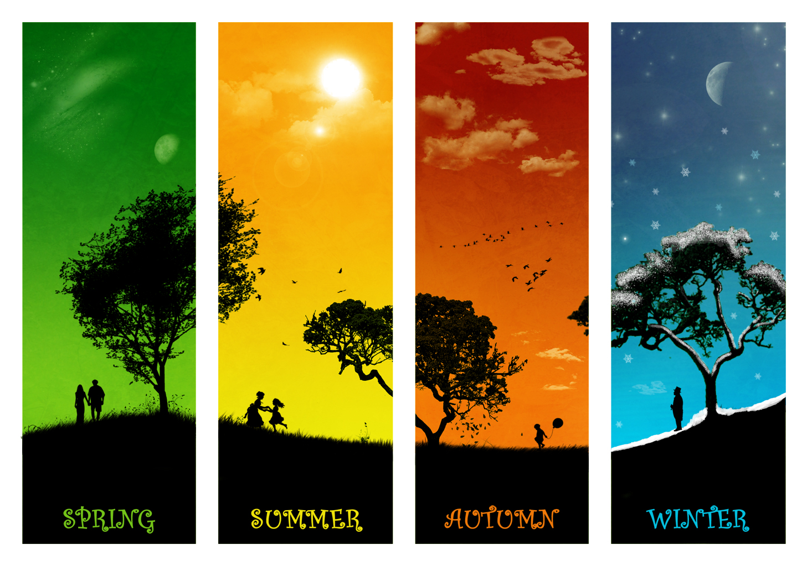

Welcome to Earth, this site here will be your quick introduction to Earth and the various seasons that exist on our planet, this guide is mostly directed for all those extraterrestials looking to stop by Earth for a quick vacation but is also suitable to humans who happen to be living under a rock.
Before you start exploring the pages, it's important for yoou to know just what a season is, a season is a division of the year based on changes in weather, ecology, and the number of daylight hours in a given region.Many seasons are marked by changes in the intensity of sunlight that reaches the Earth's surface, variations of which may cause animals to undergo hibernation or to migrate, and plants to be dormant. While there are man ways to measure when the seasons may arrive, the most common and most popular way is to use Meteorological methods to determine when seasons are coming. Meteorological methods use temperatures to determine when the hottest and coldest months begin. Some other methods that are used are Astronomical and Solar methods, Astronomical methods state that seasons begin on the 23rd day through respective zodiac signs while Solar methods base their timings off the equinoxes of the midpoint seasons.
As you can see above you our planet is divided into 4 different seasons, Winter, Spring, Summer, and Fall. If you're ready to learn more about these seasons then feel free to click on any that interest you!